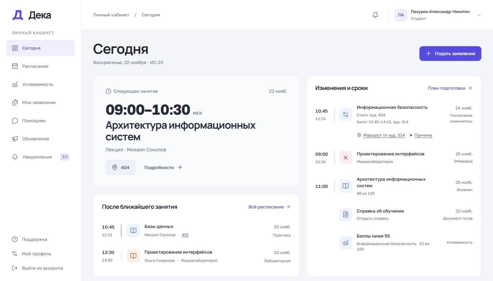
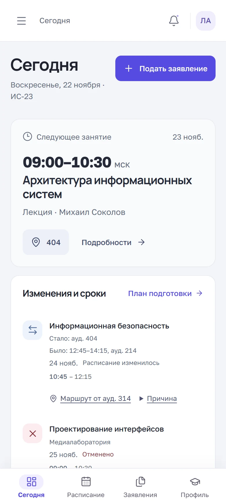
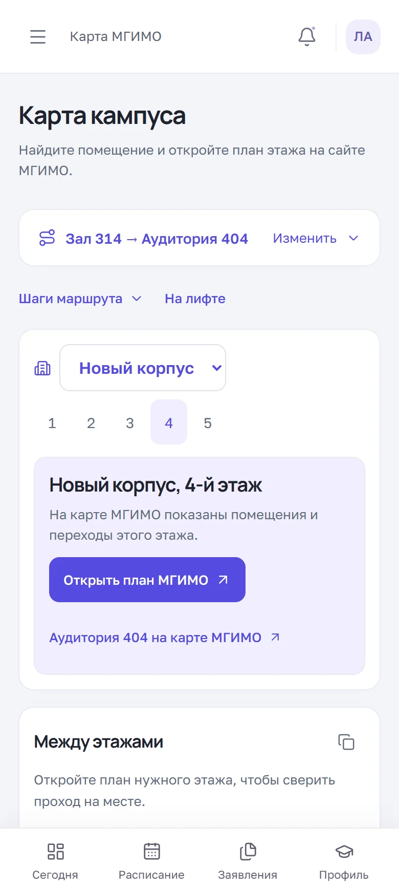
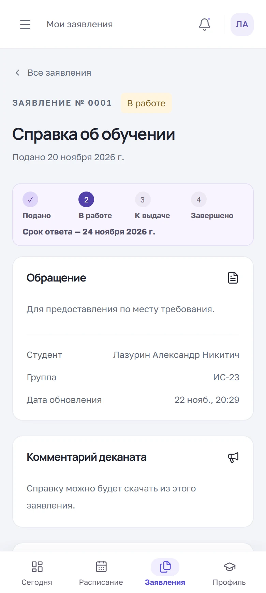

Студент · расписание
Пару перенесли на 10:45
Уведомление ведёт к занятию. Рядом с новым временем указаны прежняя аудитория и причина переноса.
- Было
- 12:45 · ауд. 214
- Стало
- 10:45 · ауд. 404
- Причина
- В аудитории 214 меняют проектор.
Номинация «Цифровой деканат» · МГИМО
Студент видит аудиторию следующей пары и срок ответа по справке. Деканат видит просроченные заявки и те, по которым требуется уточнение.
Конкурсный проект. Данные вымышлены.

Интерактивный пример на вымышленных данных. Изменения действуют до перезагрузки страницы.
Студент · расписание
Уведомление ведёт к занятию. Рядом с новым временем указаны прежняя аудитория и причина переноса.
Студент · заявления
В карточке видны срок ответа, сообщения деканата и готовый документ. На уточнение можно ответить там же.
Статус заявления
Черновик
Справка нужна для студенческой конференции.
Деканат · заявления
У сотрудника отдельная очередь по факультету. Она показывает срок ответа и заявки, по которым поступило уточнение.
Справка об обучении
Срок ответа прошёл
Заявка в начале очереди деканата.
Снимки рабочей сборки. Нажмите на экран, чтобы открыть оригинал.



На записи студент открывает перенос и план этажа, заказывает справку, отвечает на вопрос деканата и открывает готовый документ.
Проверки кабинета и сервера с вымышленными данными.
Замер от 22 ноября 2026 года. Node.js 26.13.1, PostgreSQL 18.7, Windows. Шесть авторизованных страниц по loopback, 6 480 ответов без ошибок.
На базе с 5 007 аккаунтами проверили 64 отдельные студенческие сессии одновременно. 834 ответа в секунду, p95 88,03 мс, 0 ошибок.
Сервер проверяет роль, владельца записи и факультет. Тесты проверяют доступ к чужим заявлениям и сохранение истории при параллельных запросах.
Для показа предусмотрены два студента с разными данными и сотрудник деканата. Преподаватель ведёт оценки, администратор проверяет журнал изменений.